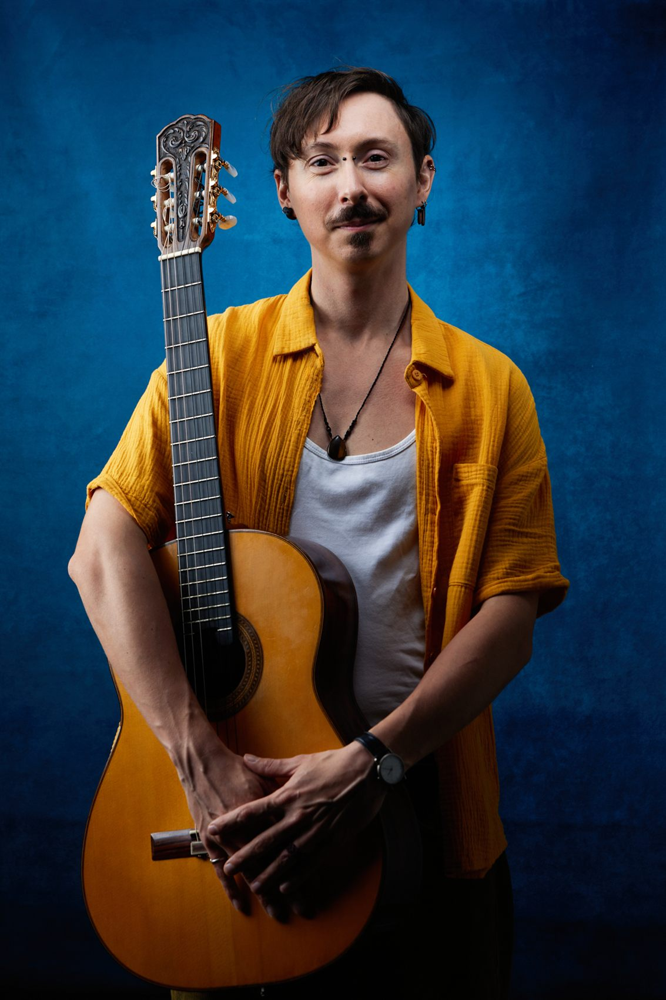
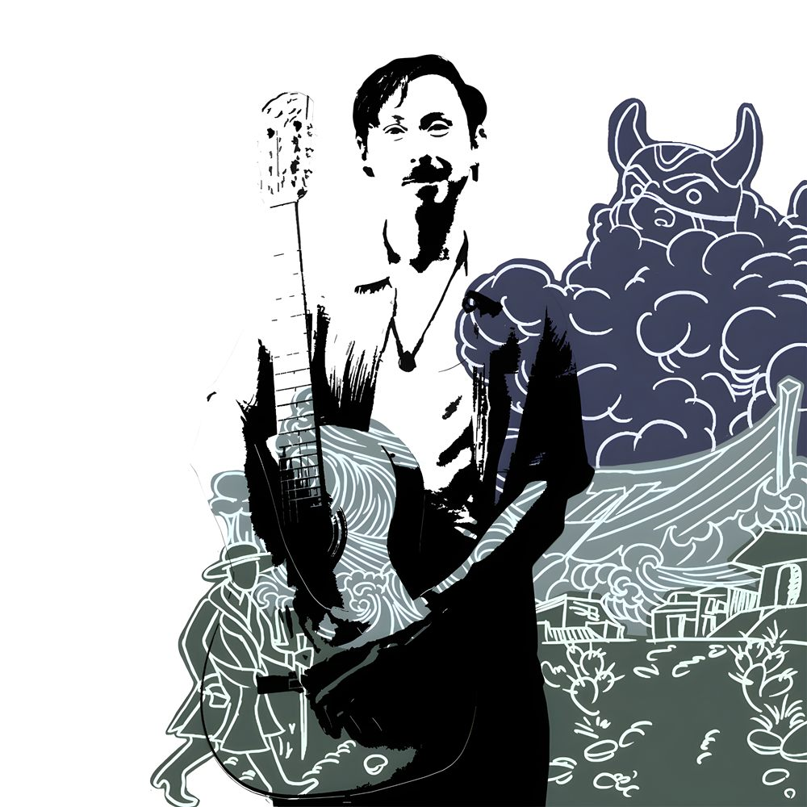
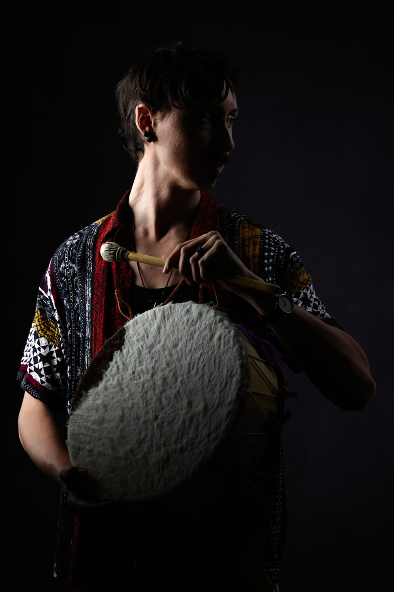

Folclore sudamericano · voz y guitarra
Marco
Grancelli
Cantor, guitarrista y compositor argentino radicado en Toulouse. Zambas, chacareras, vidalas y valses criollos, junto a canciones propias.

- World Music Charts Europe«Camino Trunco», puesto 20 en septiembre de 2026
- Transglobal World Music ChartEntre los 40 primeros en enero y febrero de 2026
- WOMEX 2022Showcase oficial en Lisboa, con el dúo Aguamadera
El concierto
Un viaje musical y poético por Sudamérica, entre la intimidad y el compromiso.
Marco combina composiciones propias con repertorio tradicional: zambas y chacareras argentinas, valses y marineras del Perú, vidalas del norte y otras músicas que aprendió viajando por el continente.
Son canciones que hablan del amor, el viaje, la ancestralidad y la lucha social, con una instrumentación mínima y tradicional: la voz, la guitarra y, a veces, el bombo legüero o la caja.
Solo
Voz y guitarra.
Dúo con percusión
Con Luciano Luna en bombo legüero y voz.
Dúo con acordeón
Con Corentin Restif en acordeón.

Primer disco solista · diciembre de 2025 · 12 temas
Camino Trunco
Una travesía íntima y expresiva por el folclore argentino y sudamericano, con voz, guitarras y bombo legüero. Obras propias sobre el amor, la muerte, la ancestralidad, la naturaleza y la lucha social, donde se cruzan la raíz argentina, los ecos andinos y una mirada personal.
Prensa
Lo que dijeron del disco y de los conciertos.
«Marco Grancelli est une figure emblématique du folklore sud-américain.»
«Despliega saber y sensibilidad en su primer disco en solitario.»
«Il a fait dialoguer sa guitare avec une voix chargée d'histoires.»
«Obra mestre en solitari del cantautor resident a França Marco Grancelli.»
«Marco Grancelli Hits The Road With Camino Trunco.»
Fotos
Fotos: Lionel Pesqué.
Biografía

Argentino, radicado en Toulouse y en viaje constante por Sudamérica, Marco Grancelli canta y toca el folclore del continente como quien lo aprendió de primera mano.
Con el dúo Aguamadera investigó, arregló y compuso sobre géneros tradicionales durante años. Con ese grupo llegó al showcase oficial de WOMEX 2022 en Lisboa, a los conciertos de Ocora Couleurs du monde en France Musique y al programa The World, en Estados Unidos.
Sus viajes por Perú y Chile, donde compartió encuentros musicales con grandes exponentes de la música criolla, y su trabajo documental en el Norte argentino lo dejaron como en su casa en muchos estilos del folclore. Hoy integra además el Trío Tikismikis, de folclore argentino.
«Camino Trunco» (2025), su primer disco solista, entró a los dos charts internacionales de músicas del mundo y sonó en radios de una decena de países.